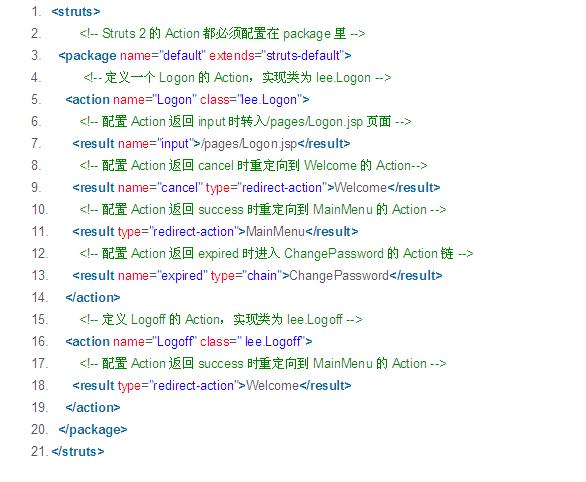

MVC模式是WEB程序设计中很重要的设计模式之一，struts框架在WEB应用中很普遍。本篇文章针对这两个知识点做了简要介绍。
MVC是一种软件架构模式，其主要思想是将软件的组成部分划分为三种不同类型的模块：分别是模型(封装业务逻辑)、视图(表示逻辑)、控制器(流程控制逻辑)。
模型：使用java类或者容器管理的bean(比如ejb容器管理的ejb,spring容器管理的javabean)来实现。
视图：jsp(html,css,js,少量的java代码)。
控制器:servlet/filter来实现。
视图向控制器发送请求，控制器分析请求，调用模型来处理，处理的结果返回给控制器，由控制器选择一个合适的视图生成对应的界面展示给用户。
Struts 1以ActionServlet作为核心控制器，由ActionServlet负责拦截用户的所有请求。
Struts 1框架有3个重要组成部分：Action、ActionForm和ActionForward对象。
ActionForm必须实现ActionForm的基类,设计上并不是真正的POJO。
ActionForward就是一个逻辑视图，通过在配置文件中定义ActionFoward的映射，完成逻辑视图名和实际视图资源之间的映射。
Action类通过调用execute方法来处理用户请求。该方法与Servlet API耦合(ActionServlet继承自HttpServlet)。
struts2核心控制器：FilterDispatcher。Struts 2用于处理用户请求的Action实例，并不是用户实现的业务控制器，而是Action代理——因为用户实现的业务控制器并没有与Servlet API耦合，显然无法处理用户请求。
Struts 2框架提供了系列拦截器，该系列拦截器负责将HttpServletRequest请求中的请求参数解析出来，传入到Action中，并回调Action的execute方法来处理用户请求。上面的处理过程是典型的AOP（面向切面编程）处理方式。
Struts 2的配置文件有两份：
配置Action的struts.xml文件。
配置Struts 2全局属性的struts.properties文件。
下面是struts.xml配置文件的示例：
XML代码 (1)在Action实现类方面的对比：Struts 1要求Action类继承一个抽象基类；Struts 1的一个具体问题是使用抽象类编程而不是接口。 Struts 2 Action类可以实现一个Action接口，也可以实现其他接口，使可选和定制的服务成为可能。 Struts 2提供一个ActionSupport基类去实现常用的接口。即使Action接口不是必须实现的，只有一个包含execute方法的POJO类都可以用作Struts 2的Action。
(2)线程模式方面的对比：Struts 1 Action是单例模式并且必须是线程安全的，因为仅有Action的一个实例来处理所有的请求。 单例策略限制了Struts 1 Action能做的事，并且要在开发时特别小心。 Action资源必须是线程安全的或同步的；Struts 2 Action对象为每一个请求产生一个实例，因此没有线程安全问题。
(3)Servlet依赖方面的对比：Struts 1 Action依赖于Servlet API，因为Struts 1 Action的execute方法中有HttpServletRequest和HttpServletResponse方法。 Struts 2 Action不再依赖于Servlet API，从而允许Action脱离Web容器运行，从而降低了测试Action的难度。 当然，如果Action需要直接访问HttpServletRequest和HttpServletResponse参数，Struts 2 Action仍然可以访问它们。
(4)可测性方面的对比：测试Struts 1 Action的一个主要问题是execute方法依赖于Servlet API，这使得Action的测试要依赖于Web容器。 为了脱离Web容器测试Struts 1的Action，必须借助于第三方扩展：Struts TestCase，该扩展下包含了系列的Mock对象（模拟了HttpServetRequest和HttpServletResponse对象），从而可以脱离Web容器测试Struts 1的Action类。 Struts 2 Action可以通过初始化、设置属性、调用方法来测试。
(5) 封装请求参数的对比：Struts 1使用ActionForm对象封装用户的请求参数，所有的ActionForm必须继承一个基类：ActionForm。 普通的JavaBean不能用作ActionForm，因此，开发者必须创建大量的ActionForm类封装用户请求参数。 虽然Struts 1提供了动态ActionForm来简化ActionForm的开发，但依然需要在配置文件中定义ActionForm；。 Struts 2直接使用Action属性来封装用户请求属性，避免了开发者需要大量开发ActionForm类的烦琐，实际上，这些属性还可以是包含子属性的Rich对象类型。如果开发者依然怀念Struts 1 ActionForm的模式。 Struts 2提供了ModelDriven模式，可以让开发者使用单独的Model对象来封装用户请求参数，但该Model对象无需继承任何Struts 2基类，是一个POJO，从而降低了代码污染。
本文主要介绍了MVC和struts框架的基础知识，包括ＭＶＣ模式的应用和优点。以及struts1和struts的介绍和优缺点的比较。但是这部分知识重在在程序中应用去体会。